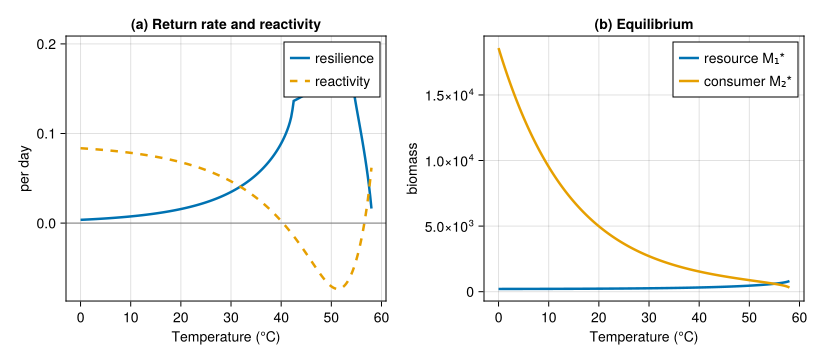
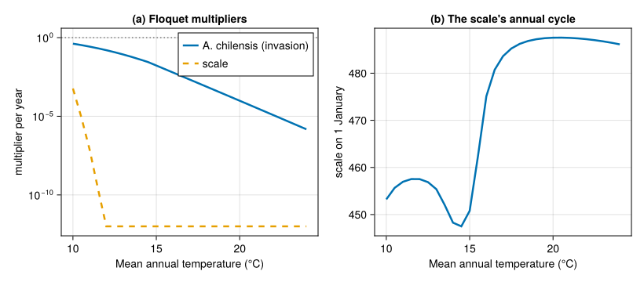
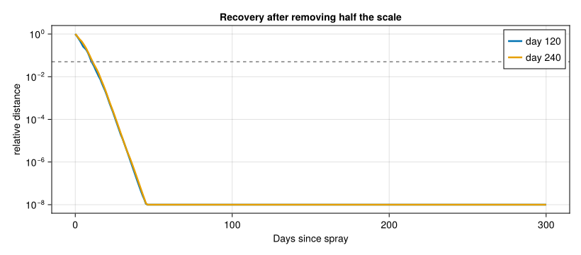

Resilience of PBDMs: Temperature, Annual Cycles and Recovery
PhysiologicallyBasedDemographicModels.jl
- Overview
- Setup
- 1. Resilience against temperature: the consumer–resource equilibrium
- 2. Annual cycles: oleander scale and Aphytis chilensis
- 3. Recovery after a spray under real weather
- Reading the results
- Caveats
- References
Overview
How quickly does a pest–natural-enemy system return after it is disturbed, and how does temperature change that? This tutorial measures resilience in three ways, each suited to a different kind of PBDM:
- An equilibrium of the consumer–resource theory model (Wang and Gutierrez 1980): the return rate of its linearisation, followed along temperature until stability is lost.
- An annual cycle of a daily-step host–parasitoid model under weather that repeats every year: the cycle’s Floquet multipliers (Klausmeier 2008), the eigenvalues of the map that takes the state on 1 January to the state a year later.
- A trajectory under real weather, which has neither an equilibrium nor a cycle: recovery after a spray, from paired simulations that share the same weather.
The metrics come from ResilienceCore.jl and DynamicalResilience.jl. This package supplies the PBDM side: linearise for theory equilibria, consumer_resource_problem, an integrator for PBDMProblem (init, step!, reinit!, set_u!), full_state, annual_map and annual_fixed_point.
Setup
using PhysiologicallyBasedDemographicModels
using DynamicalResilience
using CairoMakie
using LinearAlgebra
using Printf
using Downloads1. Resilience against temperature: the consumer–resource equilibrium
The theory helpers find the interior equilibrium of a resource (logistic, rate r, capacity K) and a consumer with a Fraser–Gilbert functional response whose respiration rises with temperature (Q₁₀). linearise turns the result into ResilienceCore’s ContinuousJacobian, so the resilience metrics apply directly.
fr = FraserGilbertResponse(0.8)
resp = Q10Respiration(0.02, 2.0, 25.0)
cr = (intrinsic_rate = 1.0, carrying_capacity = 1000.0, consumer_demand_rate = 0.5,
conversion_efficiency = 0.4)
eq = find_equilibrium(fr, resp, 25.0; cr...)
J = linearise(eq)
@printf("At 25 °C: M₁* = %.1f, M₂* = %.1f (%s)\n", eq.M1_star, eq.M2_star, eq.classification)
@printf(" resilience = %.4f per day, reactivity = %.4f per day\n", resilience(J), reactivity(J))At 25 °C: M₁* = 240.7, M₂* = 3655.3 (stable_node)
resilience = 0.0231 per day, reactivity = 0.0592 per dayTo follow the equilibrium along temperature, the same model is available as an ODEProblem whose parameters include T. DynamicalResilience’s resilience_along re-solves the equilibrium at each temperature (warm-starting from the last), linearises it, and reports where stability is lost and how: a fold when a real eigenvalue reaches zero, a Hopf when a complex pair crosses the imaginary axis.
prob_cr = consumer_resource_problem(fr, resp, 0.0; cr...)
temperatures = 0.0:0.25:60.0
along = resilience_along(prob_cr, (p, T) -> merge(p, (T = T,)), temperatures; u0 = prob_cr.u0)
println("transition: ", along.transition)transition: (kind = :fold, index = 233, estimate = 58.125)fig1 = Figure(size = (820, 360))
ax1 = Axis(fig1[1, 1], xlabel = "Temperature (°C)", ylabel = "per day", title = "(a) Return rate and reactivity")
ok = along.converged
lines!(ax1, temperatures[ok], along.metrics.resilience[ok], label = "resilience", linewidth = 2.5)
lines!(ax1, temperatures[ok], along.metrics.reactivity[ok], label = "reactivity", linewidth = 2.5, linestyle = :dash)
hlines!(ax1, [0.0], color = :gray, linewidth = 1)
axislegend(ax1, position = :rt)
ax2 = Axis(fig1[1, 2], xlabel = "Temperature (°C)", ylabel = "biomass", title = "(b) Equilibrium")
lines!(ax2, temperatures[ok], [u[1] for u in along.equilibrium[ok]], label = "resource M₁*", linewidth = 2.5)
lines!(ax2, temperatures[ok], [u[2] for u in along.equilibrium[ok]], label = "consumer M₂*", linewidth = 2.5)
axislegend(ax2, position = :rt)
fig1<div id="fig-cr-temperature">

Figure 1: Return rate (resilience) and reactivity of the consumer–resource equilibrium against temperature. Shading marks where the equilibrium was found but is unstable.
</div>
2. Annual cycles: oleander scale and Aphytis chilensis
For a daily-step model driven by seasonal weather the natural object is the annual map F: the state on day 1 sent to the state a year later, with the same weather year each time. Its fixed point is the model’s annual cycle, and the eigenvalues of its Jacobian there are the cycle’s Floquet multipliers. A cycle is stable when every multiplier has modulus below one, and the leading modulus ρ is the factor by which a small disturbance shrinks per year; the resilience is −log ρ per year.
The model is the single-parasitoid scenario of the oleander scale vignette (Gutierrez and Pizzamiglio 2007): scale with temperature-dependent fecundity and logistic crowding up to a cap of 500, and A. chilensis attacking it with a ratio-dependent response, both above their thermal thresholds. It is small (two state variables) and density-dependent, so its annual cycles are quick to find. As it turns out, the analysis is most useful here as a diagnosis of the model itself.
const SCALE_TL = 10.0
const SCALE_MU_NYMPH = 0.001
const AC_TL, AC_SEARCH, AC_DD_IMMATURE = 11.0, 0.15, 200.0
function scale_fecundity(T)
(T < 12.0 || T > 34.0) && return 0.0
return 4.0 * max(0.0, 1 - ((T - 23.0) / 11.0)^2)
end
function scale_problem(weather; tspan = (1, 365), scale0 = 50.0, par0 = 1.0)
scale_bp = BulkPopulation(:scale, scale0; K = 500.0, growth_fn = (N, w, day, p) -> begin
T = w.T_mean
N + N * scale_fecundity(T) * 0.1 * (1 - N / 500) - SCALE_MU_NYMPH * max(0.0, T - SCALE_TL) * N
end)
par_bp = BulkPopulation(:parasitoid, par0)
parasitism = CustomRule(:parasitism, (sys, w, day, p) -> begin
dd_par = max(0.0, w.T_mean - p.par_TL)
S = total_population(sys[:scale].population)
P = total_population(sys[:parasitoid].population)
attacked = 0.0
if dd_par > 0 && P > 0
attacked = min(p.par_search * (1 - exp(-0.5 * S / max(P, 0.1))) * P, 0.5 * S)
remove_fraction!(sys, :scale, clamp(attacked / max(S, 1e-10), 0.0, 1.0))
sys[:parasitoid].population.value[] =
max(0.0, P + attacked * 0.3 * dd_par / p.par_dd_immature - 0.003 * dd_par * P)
else
sys[:parasitoid].population.value[] = max(0.0, P * 0.999)
end
return (attacked = attacked,)
end)
system = PopulationSystem(:scale => scale_bp, :parasitoid => par_bp)
return PBDMProblem(MultiSpeciesPBDMNew(), system, weather, tspan;
p = (par_TL = AC_TL, par_search = AC_SEARCH, par_dd_immature = AC_DD_IMMATURE),
rules = AbstractInteractionRule[parasitism])
endscale_problem (generic function with 1 method)The coastal climate of vignette 32 is a sinusoid with mean 14.5 °C and amplitude 3.5 °C peaking in mid-July; SinusoidalWeather with phase = 191.25 reproduces it. We find the annual cycle there (30 plain years first, then Newton’s method on the annual map) and read off its multipliers.
coastal = SinusoidalWeather(14.5, 3.5; phase = 191.25)
prob_coast = scale_problem(coastal)
cycle = annual_fixed_point(prob_coast; spinup = 30)
@printf("annual cycle on 1 January: scale = %.2f, parasitoid = %.3f (converged: %s)\n",
cycle.u[1], cycle.u[2], cycle.converged)
println("Floquet multipliers: ", round.(cycle.multipliers; digits = 4))
@printf("leading modulus ρ = %.4f, resilience = %.4f per year\n",
maximum(abs, cycle.multipliers), resilience(cycle.jacobian))annual cycle on 1 January: scale = 447.50, parasitoid = 0.000 (converged: true)
Floquet multipliers: [0.0, 0.0281]
leading modulus ρ = 0.0281, resilience = 3.5712 per yearThe cycle has no parasitoid: starting from one A. chilensis, the parasitoid dies out, and the annual cycle is the scale’s alone. With the parasitoid absent, the Jacobian is triangular (next year’s parasitoids do not depend on this year’s scale when there are none), so its two diagonal entries are the two multipliers:
- the scale’s, which measures how fast the scale’s own annual cycle forgets a disturbance;
- the parasitoid’s, its growth factor per year when rare. Below one, A. chilensis cannot invade the scale’s cycle; above one, it can.
annual_fixed_point differentiates an absent species from above (populations are clipped at zero, so the map has a kink there): a central difference across the kink would halve the parasitoid’s multiplier.
Now the same calculation as the whole year warms or cools: the mean temperature shifts with the seasonal shape held fixed.
means = 10.0:0.5:24.0
m_scale = fill(NaN, length(means))
m_par = fill(NaN, length(means))
scale_jan = fill(NaN, length(means))
par_jan = fill(NaN, length(means))
for (k, Tm) in enumerate(means)
prob = scale_problem(SinusoidalWeather(Tm, 3.5; phase = 191.25))
fp = annual_fixed_point(prob; spinup = 30)
fp.converged || continue
scale_jan[k], par_jan[k] = fp.u
J = fp.jacobian.J
m_scale[k], m_par[k] = J[1, 1], J[2, 2]
end
println("parasitoid absent on every cycle: ", all(x -> abs(x) < 1e-10, par_jan))
for k in 1:4:length(means)
@printf("mean %4.1f °C: scale on 1 Jan = %6.1f, scale multiplier = %.2e, parasitoid invasion factor = %.2e\n",
means[k], scale_jan[k], m_scale[k], m_par[k])
endparasitoid absent on every cycle: true
mean 10.0 °C: scale on 1 Jan = 453.2, scale multiplier = 5.81e-04, parasitoid invasion factor = 4.12e-01
mean 12.0 °C: scale on 1 Jan = 457.5, scale multiplier = 0.00e+00, parasitoid invasion factor = 1.59e-01
mean 14.0 °C: scale on 1 Jan = 448.3, scale multiplier = 0.00e+00, parasitoid invasion factor = 4.15e-02
mean 16.0 °C: scale on 1 Jan = 475.1, scale multiplier = 0.00e+00, parasitoid invasion factor = 6.04e-03
mean 18.0 °C: scale on 1 Jan = 486.2, scale multiplier = 0.00e+00, parasitoid invasion factor = 7.70e-04
mean 20.0 °C: scale on 1 Jan = 487.5, scale multiplier = 0.00e+00, parasitoid invasion factor = 9.70e-05
mean 22.0 °C: scale on 1 Jan = 487.2, scale multiplier = 0.00e+00, parasitoid invasion factor = 1.21e-05
mean 24.0 °C: scale on 1 Jan = 486.1, scale multiplier = 0.00e+00, parasitoid invasion factor = 1.49e-06fig2 = Figure(size = (820, 360))
ax3 = Axis(fig2[1, 1], xlabel = "Mean annual temperature (°C)", ylabel = "multiplier per year", yscale = log10,
title = "(a) Floquet multipliers")
lines!(ax3, means, max.(m_par, 1e-12), label = "A. chilensis (invasion)", linewidth = 2.5)
lines!(ax3, means, max.(m_scale, 1e-12), label = "scale", linewidth = 2.5, linestyle = :dash)
hlines!(ax3, [1.0], color = :gray, linestyle = :dot)
axislegend(ax3, position = :rt)
ax4 = Axis(fig2[1, 2], xlabel = "Mean annual temperature (°C)", ylabel = "scale on 1 January",
title = "(b) The scale's annual cycle")
lines!(ax4, means, scale_jan, linewidth = 2.5)
fig2<div id="fig-floquet">

Figure 2: Floquet multipliers of the oleander scale’s annual cycle against mean temperature. The parasitoid’s multiplier is its growth factor per year when rare: below 1 everywhere, so Aphytis chilensis cannot invade. The scale’s multiplier is how much of a disturbance to the scale survives a year.
</div>
3. Recovery after a spray under real weather
Real weather is not periodic, so there is no cycle to linearise. Instead we ask how long the system takes to forget a disturbance along the trajectory the weather actually produces. The integrator lets DynamicalResilience’s recovery run two simulations of the same years: a control, and a replay (reinit!) in which a spray removes half the scale on a given day. The distance between them, over the following days, is the system’s memory of the spray.
The weather is a daily AgMERRA reanalysis series (Ruane et al. 2015) for a Mediterranean grid point (35.9° N, 0.1° E), the sample bundled with the Free Pascal port of the CASAS cassava model. It is used here only as a realistic, irregular weather record for a Mediterranean climate, not as a site where this scale–parasitoid pair has been studied.
wx_url = "https://raw.githubusercontent.com/ecorecipes/pascal-pbdm-cassava-fpc/" *
"296d825f761ef104afe1a80ccd5c0ef9aae01613/cassava/wx.det.txt"
lines_wx = readlines(Downloads.download(wx_url))
rows = [split(l) for l in lines_wx[4:end] if !isempty(strip(l))]
years = [parse(Int, r[3]) for r in rows]
tmax = [parse(Float64, r[4]) for r in rows]
tmin = [parse(Float64, r[5]) for r in rows]
keep = (years .== 1985) .| (years .== 1986)
days_wx = [DailyWeather((a + b) / 2, b, a) for (a, b) in zip(tmax[keep], tmin[keep])]
real_weather = WeatherSeries(days_wx)
@printf("%d days of 1985–86; daily mean %.1f–%.1f °C\n", length(days_wx),
minimum(d.T_mean for d in days_wx), maximum(d.T_mean for d in days_wx))730 days of 1985–86; daily mean 5.1–33.9 °CWe start the run from the coastal annual cycle found above, so the parasitoid is absent and this is the scale’s own recovery, and spray on day 120 (late April) or day 240 (late August).
prob_real = scale_problem(real_weather; tspan = (1, length(days_wx)), scale0 = cycle.u[1], par0 = cycle.u[2])
spray(u, rng) = (v = copy(u); v[1] *= 0.5; v)
scale_only(u) = u[1:1]
runs = Dict(day => recovery(prob_real, DirectIteration(); perturb = spray, observe = scale_only,
t_pulse = day, horizon = 300, interval = 1, tol = 0.05)
for day in (120, 240))
for day in (120, 240)
r = runs[day]
@printf("spray on day %d: scale removed %.2f; back within 5%% after %s days; return rate %.4f per day\n",
day, r.distance[1], r.return_time, r.return_rate)
endspray on day 120: scale removed 243.22; back within 5% after 11 days; return rate 0.4015 per day
spray on day 240: scale removed 237.84; back within 5% after 12 days; return rate 0.4148 per dayfig3 = Figure(size = (820, 360))
ax5 = Axis(fig3[1, 1], xlabel = "Days since spray", ylabel = "relative distance", yscale = log10,
title = "Recovery after removing half the scale")
for day in (120, 240)
r = runs[day]
lines!(ax5, r.t, max.(r.distance ./ r.distance[1], 1e-8), label = "day $day", linewidth = 2.5)
end
hlines!(ax5, [0.05], color = :gray, linestyle = :dash)
axislegend(ax5, position = :rt)
fig3<div id="fig-recovery">

Figure 3: Distance in scale density between sprayed and unsprayed runs under 1985–86 AgMERRA weather, relative to the amount removed, for a spray on day 120 or day 240.
</div>
Reading the results
The consumer–resource equilibrium recovers faster as it warms, until it fails. At 25 °C it is a stable node with a return rate of 0.023 per day (a disturbance shrinks by a factor of e in about 43 days) and reactivity 0.059 per day: some disturbances grow at first (Neubert and Caswell 1997). Warming raises the consumer’s respiration, so its equilibrium falls and the resource’s rises; the return rate climbs to about 0.17 per day near 50 °C, the return becomes oscillatory (a stable focus) between about 45 and 52 °C, and reactivity turns negative above about 40 °C. Stability is lost near 58 °C. resilience_along labels this a fold because a real eigenvalue reaches zero, but it is a transcritical point: the consumer’s equilibrium meets zero as its metabolic compensation point reaches one, rather than meeting a saddle and disappearing. The label distinguishes real from complex crossings only.
In the oleander scale model the parasitoid cannot invade, at any temperature. Every annual cycle has the scale alone. The parasitoid’s multiplier, its growth factor per year when rare, is 0.41 at a mean of 10 °C and falls steadily with warming, to about 0.04 at 14 °C and 10⁻⁶ at 24 °C: warmer years carry more degree-days of parasitoid loss. This explains why vignette 32 finds the same scale density with A. chilensis, with C. utilis, or with both: in that model’s parasitoid equation the gain per degree-day (at most 0.15 × 0.3 / 200 ≈ 0.0002 per parasitoid) is about thirteen times smaller than the loss (0.003), so the parasitoids always decline. The annual-cycle analysis finds this in seconds, where simulations of a few years only show the parasitoids drifting down.
The scale’s own multiplier is an artefact of its cap. It is 6 × 10⁻⁴ at 10 °C and exactly zero from 12 °C up, because on those cycles the scale reaches the carrying-capacity cap of 500 in summer, and BulkPopulation clips it there: any disturbance is erased once the cap is reached. Under real weather the same thing shows up as fast recovery: removing half the scale in late April or late August is undone to within 5% in 11–12 days, at a return rate of about 0.4 per day, as logistic growth refills the cap.
Caveats
- Linearisation is local. Return rates and multipliers describe small disturbances near an equilibrium or cycle; a spray that removes half the scale is not small, which is why the recovery runs are simulated rather than linearised.
- The annual map repeats one weather year. Its fixed point is the cycle under that year forever; under real, varying weather the system never settles onto it.
- Finite differences. The annual map’s Jacobian is taken by central finite differences, because PBDM states are stored as
Float64and do not carry dual numbers. - Model scope. The scale–parasitoid model is the simplified single-parasitoid scenario of vignette 32, and the real weather is a sample record, not a site-specific study.
References
<div id="refs" class="references csl-bib-body hanging-indent">
<div id="ref-Gutierrez2007OleanderScale" class="csl-entry">
Gutierrez, Andrew Paul, and Maria A. Pizzamiglio. 2007. “A Regional Analysis of Weather Mediated Competition Between a Parasitoid and a Coccinellid Predator of Oleander Scale.” Neotropical Entomology 36: 70–83. https://doi.org/10.1590/S1519-566X2007000100009.
</div>
<div id="ref-Klausmeier2008Floquet" class="csl-entry">
Klausmeier, Christopher A. 2008. “Floquet Theory: A Useful Tool for Understanding Nonequilibrium Dynamics.” Theoretical Ecology 1: 153–61. https://doi.org/10.1007/s12080-008-0016-2.
</div>
<div id="ref-NeubertCaswell1997Transients" class="csl-entry">
Neubert, Michael G., and Hal Caswell. 1997. “Alternatives to Resilience for Measuring the Responses of Ecological Systems to Perturbations.” Ecology 78 (3): 653–65. https://doi.org/10.1890/0012-9658(1997)078[0653:ATRFMT]2.0.CO;2.
</div>
<div id="ref-Ruane2015AgMERRA" class="csl-entry">
Ruane, Alex C., Richard Goldberg, and James Chryssanthacopoulos. 2015. “Climate Forcing Datasets for Agricultural Modeling: Merged Products for Gap-Filling and Historical Climate Series Estimation.” Agricultural and Forest Meteorology 200: 233–48. https://doi.org/10.1016/j.agrformet.2014.09.016.
</div>
<div id="ref-WangGutierrez1980Stability" class="csl-entry">
Wang, Y. H., and Andrew Paul Gutierrez. 1980. “An Assessment of the Use of Stability Analyses in Population Ecology.” Journal of Animal Ecology 49: 435–52. https://doi.org/10.2307/4256.
</div>
</div>